KATALOG ZUMEX
Najděte stroj
pro váš provoz.
Od první sklenice za barem po celou výrobní linku. Vyberte si podle suroviny, intenzity provozu a způsobu použití.
 ↗
↗Citrusové odšťavňovače
Soul Series 2
Soul Series 2 přináší automatické lisování citrusů i na bar, kde je každý centimetr důležitý.
- Výkon M/S18 plodů/min
- Výkon XS36 limetek/min
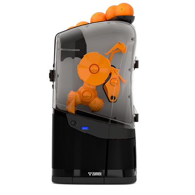
↗Citrusové odšťavňovače
Minex
Minex je automatický pomerančový lis pro provozy s mírnější spotřebou: malé kavárny, pekárny i hotelové snídaně.
- Výkon13 pomerančů/min
- Zásobník6–7 plodů
 ↗
↗Citrusové odšťavňovače
Essential
Essential je řada pro každodenní přípravu čerstvé citrusové šťávy v gastronomii.
- Parametry proEssential Pro
- Výkon22 plodů/min
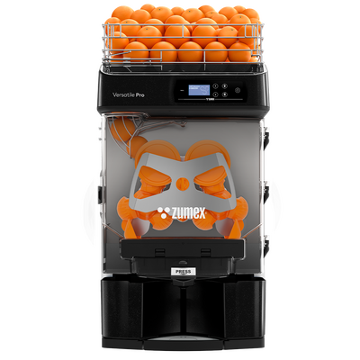
↗Citrusové odšťavňovače
Versatile
Versatile spojuje automatické podávání citrusů s větší autonomií než ručně doplňované stolní lisy.
- Výkon Basic / Pro22 plodů/min
- Zásobník Pro16 kg
 ↗
↗Citrusové odšťavňovače
Speed Up
Speed Up je určen pro intenzivní výdej čerstvé šťávy v obchodech, velkých bufetech a vytížených gastroprovozech.
- Výkon40 plodů/min
- Zásobník20 kg
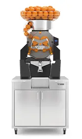
↗Citrusové odšťavňovače
Speed S+plus
Speed S+plus je řada pro samoobslužný prodej čerstvé šťávy a provozy s velmi vysokou poptávkou.
- Výkon40 plodů/min
- Rozsah ovoce s příslušnými sadami45–95 mm
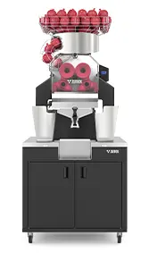
↗Citrusové odšťavňovače
Speed Pomegranates
Speed Pomegranates je specializovaná řada pro šťávu z granátových jablek.
- Výkon30 granátových jablek/min
- Zásobník20 kg
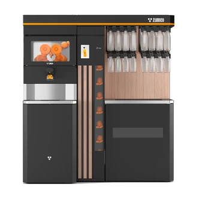
↗Samočisticí
Zitrux
Zitrux je kompletní samoobslužné řešení pro prodej čerstvé citrusové šťávy v supermarketu.
- Zásoba ovoce75 kg
- Kapacita odpadu120 l
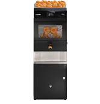
↗Samočisticí
Zitrux Compact
Zitrux Compact přináší samočisticí technologii do menšího prodejního prostoru.
- VýkonAž 40 plodů/min
- Nepřetržité zpracováníAž 30 kg ovoce
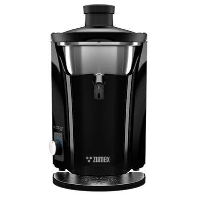
↗Multifruit
Multifruit
Multifruit rozšiřuje nabídku o šťávy z ovoce i zeleniny: od jablek a mrkve po okurku, ananas nebo zázvor.
- Zpracování suroviny120 kg/h
- Orientační průtok1,8 l/min
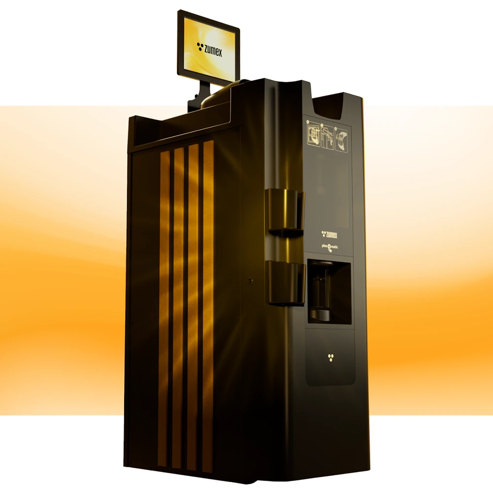
↗Multifruit
Pineomatic
Pineomatic je automatický kráječ ananasu pro prodej hotového čerstvého ovoce.
- Zpracovávaná surovinaAnanas
- Doba přípravyPřibližně 30 sekund
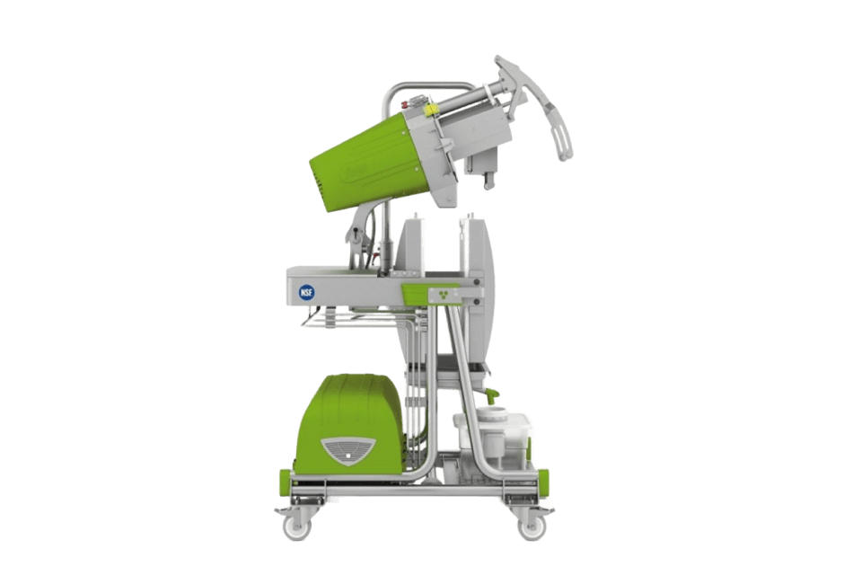
↗Cold Press
Mastery
Mastery je lis pro výrobu šťáv za studena z ovoce a zeleniny.
- TechnologieCold Press — lisování za studena
- SurovinyOvoce a zelenina
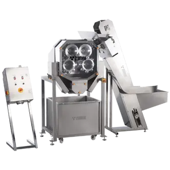
↗Průmyslové
Z450 / Z450P
Z450 je průmyslový citrusový lis pro kontinuální zpracování větších objemů ovoce.
- Rozsah produkce řady450–1 580 l/h
- Rozsah zpracování ovoce1 100–2 200 kg/h
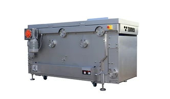
↗Průmyslové
ZBP
ZBP je kontinuální pásový lis pro průmyslové zpracování ovoce a zeleniny.
- ZBP 400 — kapacita400 kg/h
- ZBP 700 — kapacita700 kg/h
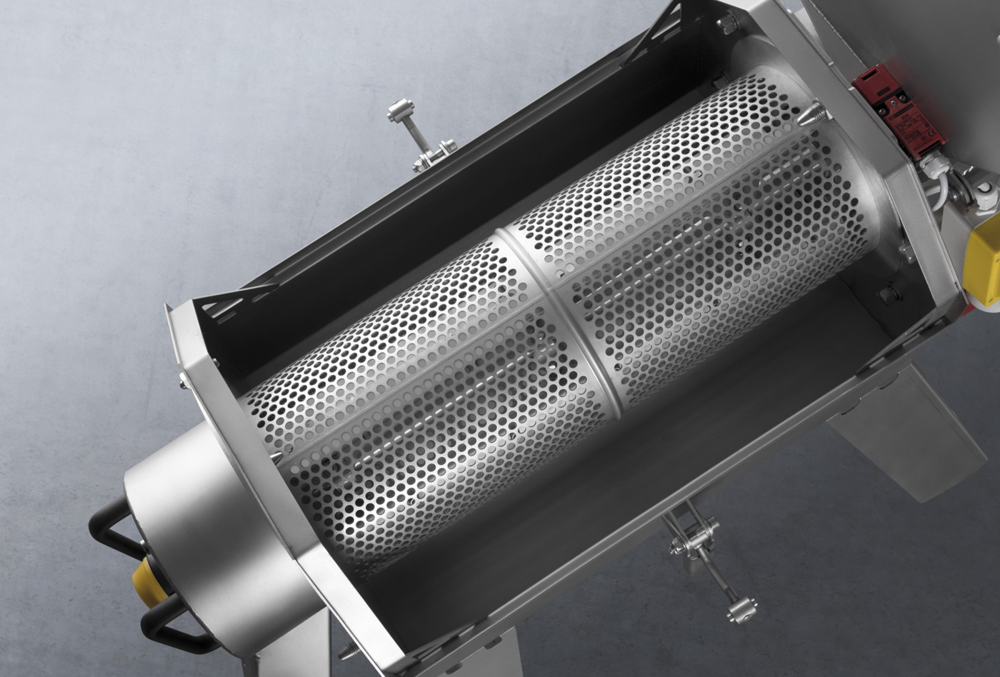
↗Průmyslové
ZDS
ZDS je pulper určený k oddělování a využití dužiny v průmyslovém zpracování ovoce.
- ZDS 500 — kapacita500 kg/h
- ZDS 1000 — rozsah kapacity1 000–5 000 kg/h
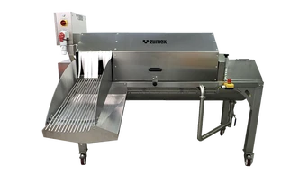
↗Průmyslové
ZWS
ZWS zajišťuje mytí ovoce a zeleniny před dalším průmyslovým zpracováním.
- TechnologieRotující buben a vnitřní kartáče
- MateriálNerezová ocel
 ↗
↗Průmyslové
ZWM
ZWM propojuje mytí, dopravu a drcení ovoce v jedné sestavě.
- ZWM 1500 — kapacita1 500–2 000 kg/h
- ZWM 3000 — kapacita3 000 kg/h
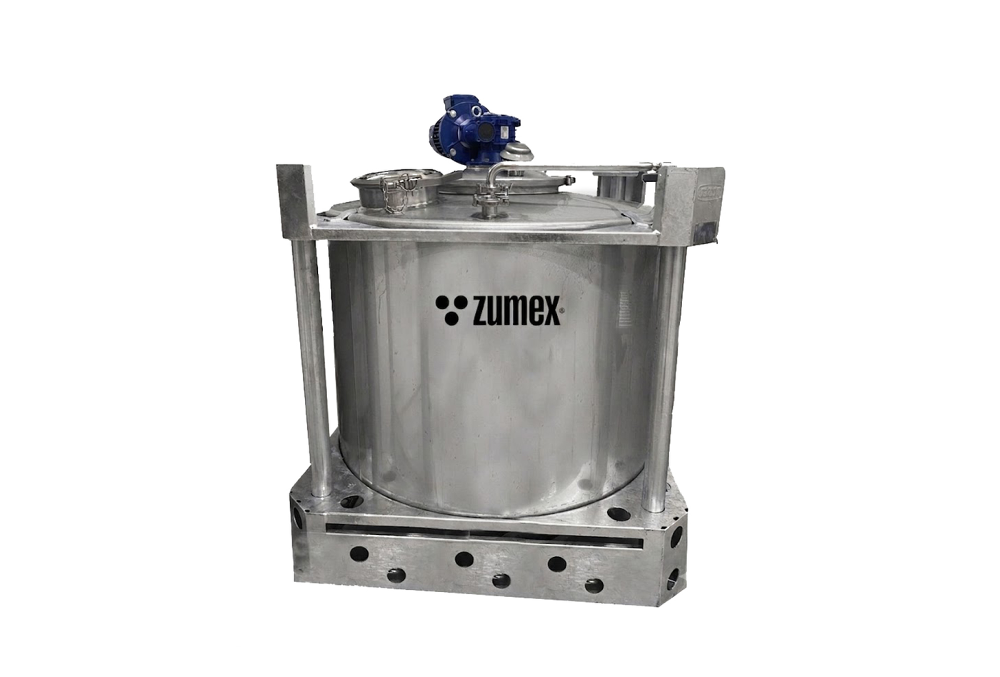
↗Průmyslové
ZT
ZT je vyrovnávací nádrž, která vytváří mezizásobu mezi jednotlivými kroky výrobní linky.
- Objemové varianty750 / 1 000 / 1 250 l
- MateriálNerezová ocel
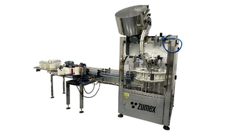
↗Průmyslové
ZF / ZBIB
Řada ZF / ZBIB pokrývá plnění šťáv do lahví i obalů Bag-in-Box.
- ZF6 Pro — kapacita600 l/h
- ZF6 Pro — příkon / hmotnost0,8 kW / 60 kg
 ↗
↗Průmyslové
ZCIP / ZS CIP
ZS CIP je mobilní čisticí systém pro sanitaci kompatibilních zařízení bez jejich úplného rozebrání.
- Objem nádrže250 l
- Recirkulační průtok10 000 l/h
Žádný stroj této kombinaci neodpovídá.
Zkuste méně filtrů nebo jiný název produktu.